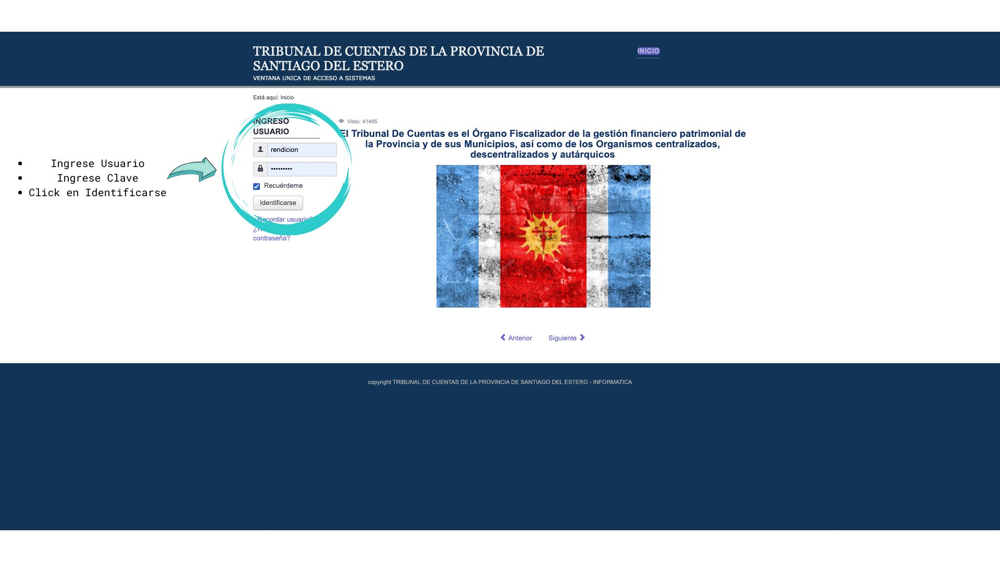

Instrucciones
-
Dirigirse a http://www.tcse.gob.ar/.
-
Luego dirigirse al recuadro de "Ventana Unica" y hacer click en Acceder.
-
Una vez que entramos a la ventana única debemos ingresar el usuario y la contraseña.
-
Una vez dentro del sistema, en el Menú principal, hacer click en Notificaciones y Comunicaciones Oficiales.
Debe usar el email y la contraseña otorgados por el organismo. Ejemplo: email@municipiosde.gob.ar
Imágenes

